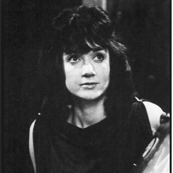

| Home | The Doctors | The Companions | The Villians |
|
|||
|
Katarina Katarina is a fictional character played by Adrienne Hill in the long-running British science fiction television series Doctor Who appearing in the programme from November to December 1965. Only a single episode to feature her still exists in the BBC archives. She appeared in 2 stories (5 episodes) An inhabitant of ancient Troy, she was a brief companion of the First Doctor. The character was devised to act as a companion. However this was re-evaluated by the writers and Katarina was killed off during the following serial having appeared in just five episodes. As such, she was the first companion in the series to die. The writers, including producer John Wiles decided to write out Katarina as soon as possible, as they realized the writing challenges that came with the character. The writing challenges included the fact that the character was so very unused to modern concepts. For example, Katarina did not even know what a key was. However, they decided to write her out in the most dramatic way possible. Her role as companion within The Daleks' Master Plan was given to the character of Sara Kingdom, who was also killed off in the same story.[1] |